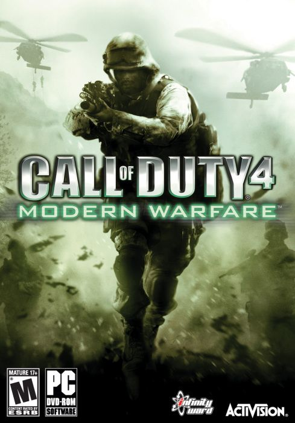

Call of Duty 4 modern warfare 1 6.35 GB
Género: FPS
La historia toma lugar en el año 2011, donde un líder radical ha ejecutado al
presidente Al-Fulani que preside un país sin nombre con localización en Oriente
Medio, y un movimiento «ultranacionalista» da inicio a una guerra civil en
Rusia. Los conflictos son vistos desde la perspectiva de un grupo de la Fuerza
de Reconocimiento del Cuerpo de Marines de los Estados Unidos y de un
comando del SAS británico, estableciéndose estos en varios lugares, incluyendo
Medio Oriente, Azerbaiyán, Rusia y Prípiat.